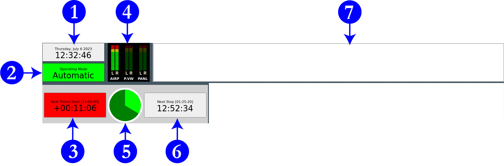
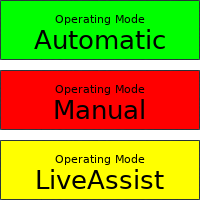
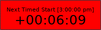
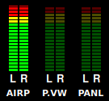
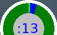
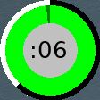

14.B. RD AirPlay — Top Bar
The top bar has seven widgets that describe the state of the log and the song that is playing: Wall Clock (1), Mode Indicator Button (2), Post Point Counter (3), Audio Meters (4), Pie Wedge (5), Next Stop Counter (6), and Label Area (7).

14.B.1. Wall Clock (1)
Displays the current date and time. The time display is in 12-hour (AM/PM) time.
14.B.2. Mode Indicator Button (2)

This widget displays the current automation mode. Click it to toggle among the modes. The three modes are "Automatic", "Manual", and "LiveAssist".
-
Automatic: In this mode, the system will keep playing until it hits a "Stop" transition. See 15.E. Transitions on Page 53 in Volume III.
-
Manual: In this mode, the system will stop after each song plays. It will remain stopped until you manually start another song.
-
Live Assist: WMUL‑FM does not use this mode. It works similarly to manual mode, in that it stops after each song. The difference occurs when an operator clicks start on a second song. In either "Automatic" or "Live Assist", when the operator clicks start on a song while another song is already playing, the first song will be faded out. In "Manual" mode, both songs play over top of each other at full volume.
14.B.3. Post Point Counter (3)

This indicator shows whether the next timed event in the log is On-Time, Early, or Late. The top line tells when the next timed start is scheduled to occur. If the next timed event will be reached within one (1) second of its scheduled time, the box will be green and will display "On Time". If there are enough songs scheduled to reach the next scheduled start, then the next event will be Early. The box will be yellow and will display a negative time. If there are more songs scheduled than will fit, the next event will be late. The box will be red and will display a positive time.
In the above screenshot, the next timed event is at 3:00:00 p.m. and there is 6 minutes and 9 seconds more music scheduled than will fit within the available time.
However, when the "Mode" is set to "Manual" or "Live Assist", this box will be grayed out and the numbers blank.
14.B.4. Audio Meter (4)

The audio meters show the levels of the audio being played by all Rivendell apps. There is one set of meters for each audio channel.
-
AIRP: The levels of the Button Log in RD AirPlay, playing through the RIVDELL channel on the board.
-
P.VW: The levels of anything that is being previewed through the preview channel on the board. See 14.H. Previewing Audio Before Playback on Page 35 in Volume III.
-
PANL: The levels of the Sound Panel or RD Panel playing through the Panel channel on the board. See 15.A. The Sound Panel and RD Panel on Page 41 in Volume III.
This meter is scaled a bit differently than the meter on the audio console. Do not be concerned if most audio is in the red zone of this meter, because it should be. Zero on this audio meter is approximately -12 on the audio console’s meter.
Despite the difference in scale, this meter is still useful for troubleshooting. If levels are observed on this meter, but not on the audio console, that probably means that the channel on the board is turned off. If no levels are observed here, it probably means that there is no file playing, or that the file does not have any audio, or that the audio in the file is very quiet.
14.B.5. Pie Wedge (5)
This widget displays slightly different information depending on how far along the current song is. For most of the song, it displays a pie chart showing the time elapsed and time remaining to be played in the song. The time elapsed wedge will be colored bright green and the time remaining wedge will be colored dark green. When the "Mode" is "Manual" or "Live Assist", the time elapsed wedge will be colored red instead of bright green.
At the beginning and end of the song, it displays additional information. At the beginning of the song, an overlay counts down to the end of the talk marker or post (where the song lyrics start). Also, a wedge of the pie chart also displays the talk section included as a part of the song. (This only applies to songs that have talk markers set. If a song does not have talk markers set, the pie chart will go directly to the full song chart mentioned above. See 17.D. Cart Markers Explained on Page 89 in Volume III.)

At the end of the song an overlay counts down the last fifteen (15) seconds remaining in the current song. The ring around the main pie chart also counts down the time remaining. (Specifically, it will count down to the Segue End marker, if set, or the Cut End marker, if there are no segue markers. See 17.D. Cart Markers Explained on Page 89 in Volume III.)

14.B.6. Next Stop Counter (6)
This counter displays two different numbers to tell the operator when the next stop in the log is. For music logs, the next stop will be the end of the day’s log. For news and sportscasts, there are scheduled points in the log where the log will stop so that the announcers may go on-air.
The larger numbers on the second row count down the time remaining until the next stop. The smaller numbers above show the wall clock time when the stop is scheduled. In the screenshot, the next stop is scheduled for 1:18:50 am, which was 11 hours, 1 minute, and 32 seconds after the screenshot was taken.
A "stop" in the log may come from any of three places.
-
At the end of the day’s log. That log will "stop" and the next day’s log will automatically be loaded and started.
-
When a song is set to a "stop" transition. 15.E. Transitions on Page 53 in Volume III
-
When the "Mode" is set to "Manual" or "Live Assist". The next stop will be the end of the currently playing song.
When the log is stopped, the second row will display "Stopped" and the first row will display "none" for the scheduled time.